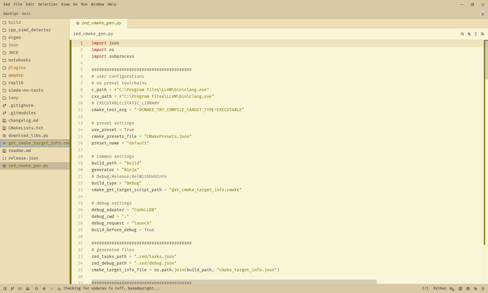
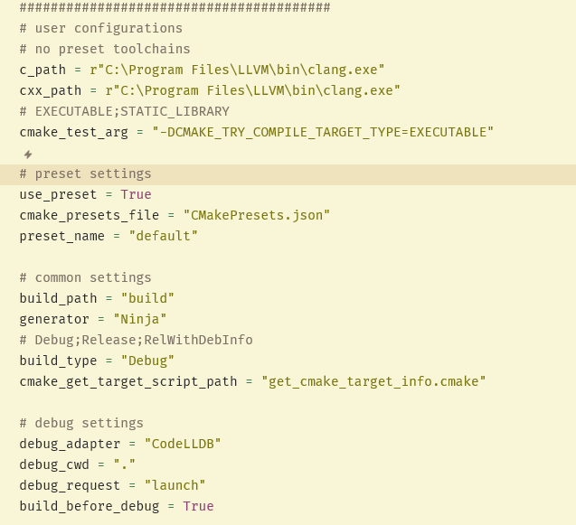
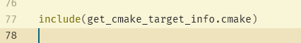
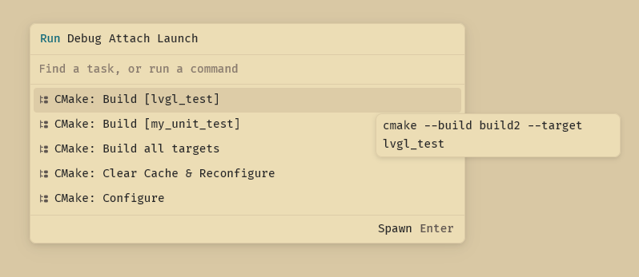
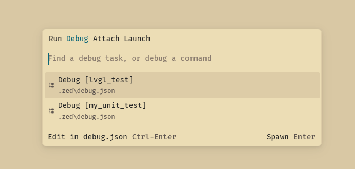

使用方法
首先创建一个新的cmake工程，将这两个文件放在顶层目录里面
我也是cmake新人，不怎么用cmake的高级功能，所以有一些简单的设置选项
注意：我没有测试过CMakePreset功能
第二步需要您在顶层CMakeLists.txt的末尾中添加这一行来输出所有target的信息
如果您不加这一句，脚本无法获取target信息就会报错，无法生成tasks.json和debug.json
第三步在终端使用python运行这个脚本即可

注意：如果新增或者减少了Target，需要重新运行。如果是生成器不同导致CMake报错，您需要手动删除CMake缓存再次运行脚本。对于无Target增减的，程序生成一个CMake配置的任务您可以调用它
第四步，使用Zed的tasks.json和debug.json
 